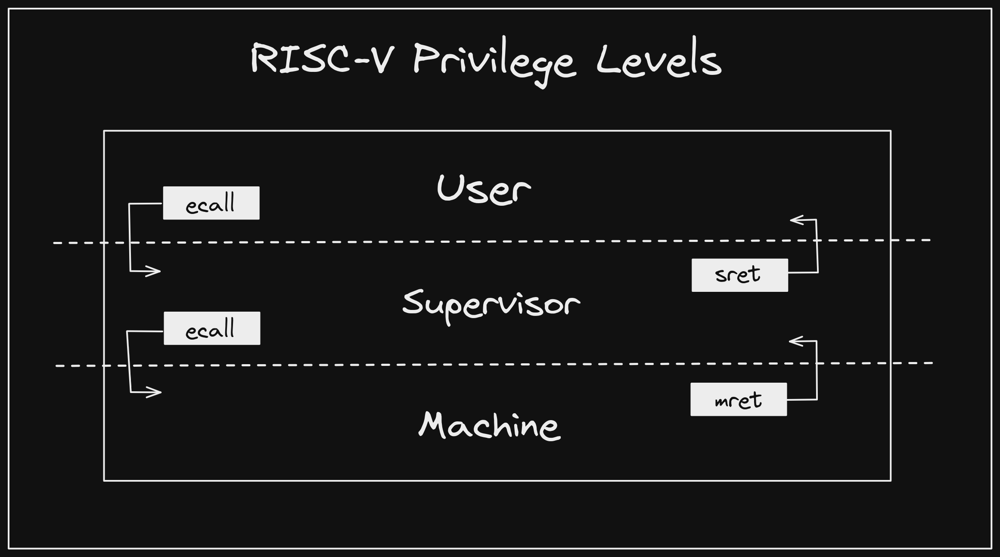
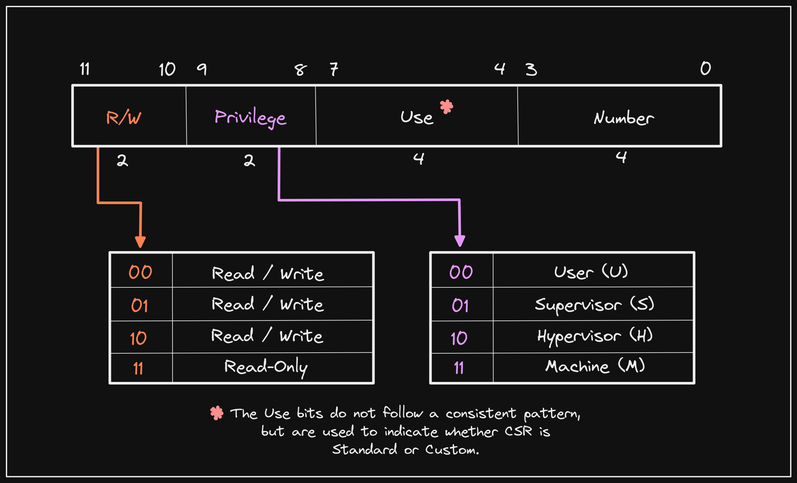
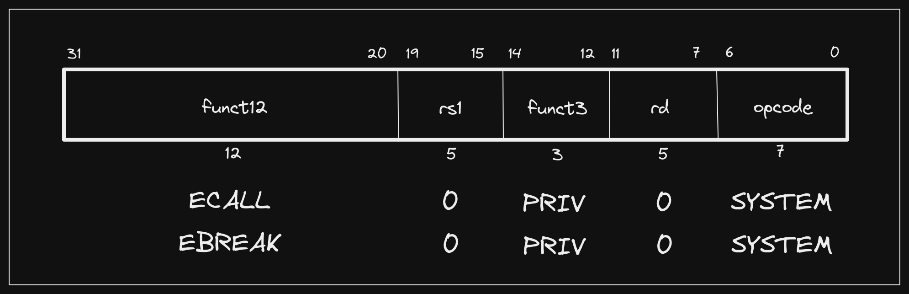
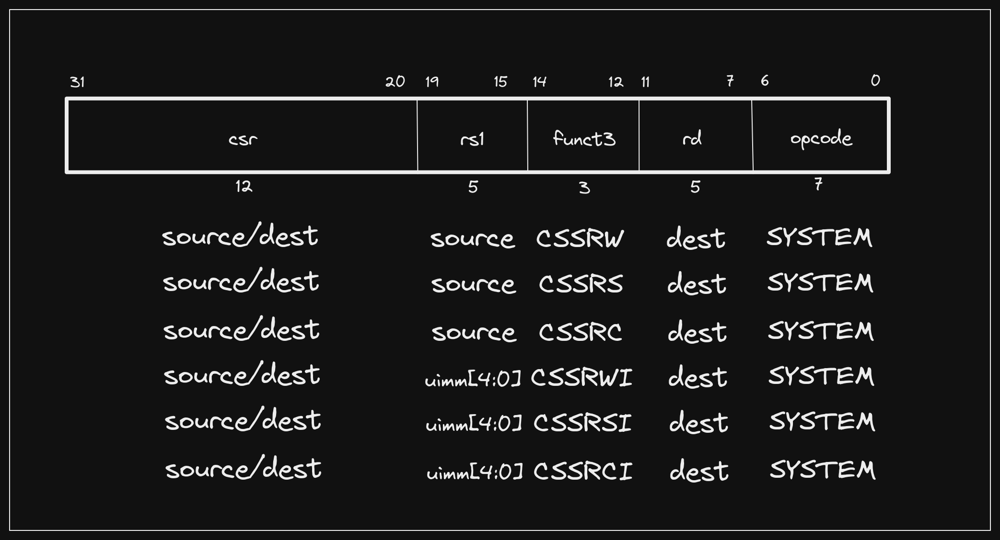
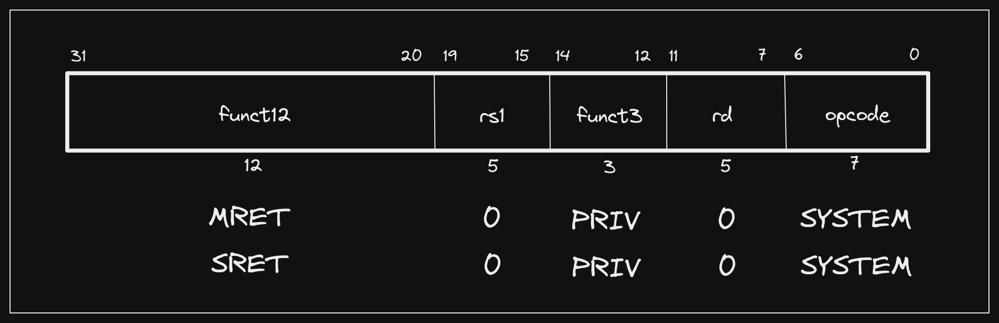
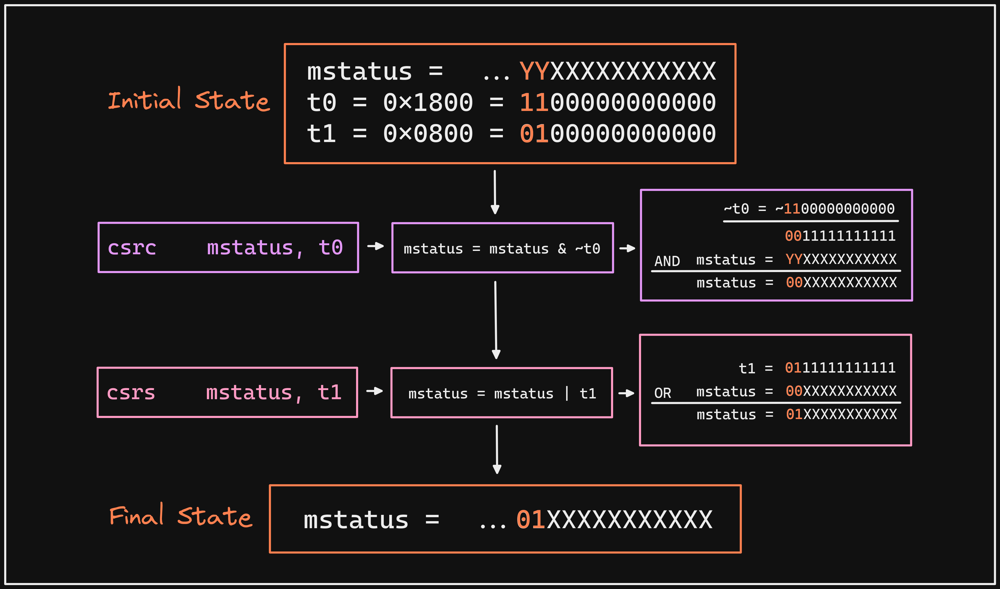
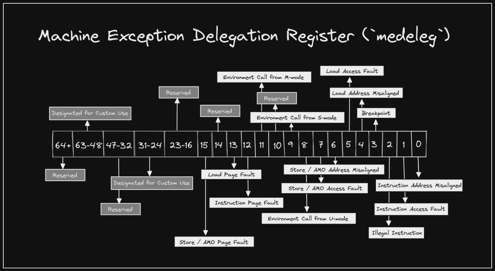

This is part of a series on the blog where we explore RISC-V by breaking down real programs and explaining how they work. You can view all posts in this series on the RISC-V Bytes page.

It has been a bit since our last post, but today we are going to begin our journey into some of the more interesting areas of RISC-V systems. In the first post in the series, we installed our RISC-V toolchain, which included QEMU. We denoted at that point that three RISC-V QEMU binaries were actually installed:
qemu-riscv32qemu-riscv64qemu-system-riscv64
Most software developers are at least somewhat familiar with the concept of privilege on a computer. For example, the operating system is able to perform operations that are prohibited for processes running in user space. This allows for isolation and protection; a single process is not able to access the memory of another, and a process that crashes does not corrupt the entire system. To enable this model, hardware must offer varying levels of privilege and the ability to move between them.
In previous posts we have used qemu-riscv64 to emulate processes running in
user space. qemu-system-riscv64 gives us full system emulation, meaning that
we can access all privilege modes, which is useful when testing software that
runs at lower levels of the stack. In order to understand how software makes use
of these privilege levels, we need to take a step back and examine what RISC-V
systems actually offer.
RISC-V Privilege Levels Link to heading
Volume 2 of the RISC-V ISA specification, or “The Privileged Spec”, defines offered privilege levels. In simplest terms, RISC-V offers three levels of privilege, or modes, which systems can choose to support in different configurations. The three basic modes include:
Machine (M)Supervisor (S)User (U)
These modes are listed in order of decreasing privilege, with Machine (M)
mode being the most privileged and User (U) mode being the least. All RISC-V
systems must implement M mode, but may optionally support S mode and U
mode. This allows for the following configurations:
MMandUM,S, andU
Systems choose to support modes based on the complexity of the software they
will run. A small device that only runs a single, trusted application may choose
to only support M mode. If there is desire for an isolation boundary between
the application and more direct hardware access, M and U mode may both be
supported. A robust system, such as a server or desktop machine will support
M, S, and U for the benefits enumerated in the introduction.
In the latest versions of the Privileged Spec, the Hypervisor (H) extension has reached v1.0 and has been ratified. This allows for
Smode to be extended with additional virtualization capabilities, resulting in privilege modes forHypervisor-extended Supervisor (HS),Virtual Supervisor (VS), andVirtual User (VU). This mode will be covered in more detail in a future post.
The Privileged Spec also references
Debug (D)mode, which has its own dedicated specification.Dmode offers even higher privilege thanMmode. In my opinion, this is one of the most interesting components of the RISC-V ecosystem, and I will certainly be sharing some more about it soon.
Control and Status Registers (CSRs) Link to heading
In our post on Caller and Callee Saved Registers, we introduced 32 General Purpose Registers (GPRs) defined in the RISC-V ISA. These registers are defined in the Unprivileged Spec and are sometimes referred to as integer registers. The RISC-V Privileged Spec defines additional registers referred to as Control and Status Registers (CSRs). While GPRs are accessible at any privilege level, CSRs are defined at a specific privilege level and can only be accessed by that level and any levels of higher privilege.
The Privileged Spec defines both a common set of CSRs and address ranges that
all CSRs must reside within. CSR addresses are 12-bits, meaning that up to 4,096
CSRs can be implemented (2^12 = 4096). The bits in a CSR address define its
accessibility, use, and CSR number.

While GPRs are used for storing data used to perform operations, CSRs typically modify the behavior of a hart (i.e. “Control”) or inform of its state and attributes (i.e. “Status”), or both.
Reminder: hart is a term used by RISC-V that refers to a HARdware Thread. A hart is frequently referred to as a core or CPU in other contexts.
The Machine Architecture ID register (marchid) is an example of a CSR that
only communicates information about a hart, while a CSR like Machine Trap-Vector
Base-Address Register (mtvec), which we will take a closer look at in this
post, modifies the hart’s behavior.
While exploring CSRs warrants many individual posts, we introduce them here because some of them are relevant to how we navigate the privilege levels offered by a RISC-V system.
Privileged Instructions Link to heading
In our Introduction to Instruction Formats post we covered a few instructions offered by the RISC-V base ISAs, and touched briefly on how RISC-V uses an extension model to optionally add instructions and capabilities to a system. As part of the base ISAs, two instructions we did not cover are defined:
- Environment Call (
ecall) - Environment Break (
ebreak)

These instructions are defined in the Unprivileged Spec, but fall into a
category of instructions that use the SYSTEM opcode, indicating that they may
require privileged access to execute successfully. The only other SYSTEM
instructions that are defined in the Unprivileged Spec fall under the Zicsr
extension:
- Atomic Read/Write CSR (
csrrw) - Atomic Read and Set Bits in CSR (
csrrs) - Atomic Read and Clear Bits in CSR (
csrrc) - Atomic Read/Write CSR Immediate (
csrrwi) - Atomic Read and Set Bits in CSR Immediate (
csrrsi) - Atomic Read and Clear Bits in CSR Immediate (
csrrci)

You’ll notice that the second group of three instructions are immediate
variants of the first group, meaning that rs1 is not a source register, but
rather the lowest 5 bits of an unsigned immediate value. These instructions are
used to operate on CSRs that are accessible in the current privilege level.
Throughout this post, we will primarily use CSR
pseudoinstructions
to interact with CSRs, which have the following mapping to the instructions
defined above:
csrr rd, rs->csrrs rd, csr, x0csrw csr, rs->csrrw x0, csr, rscsrs csr, rs->csrrs x0, csr, rscsrc csr, rs->csrrc x0, csr, rscsrwi csr, imm->csrrwi x0, csr, immcsrsi csr, imm->csrrsi x0, csr, immcsrci csr, imm->csrrci x0, csr, imm
The Privileged Spec defines additional SYSTEM instructions per privilege
level, but we will only use two of them in this post:
- Machine Return from Trap (
mret) - Supervisor Return from Trap (
sret)

The Zicsr instructions are somewhat self-explanatory, but the environment and
trap instructions require further investigation. When a RISC-V hart starts it is
in M mode. In order to navigate between privilege levels, we need to be able
to both request a trap and return from one. ecall is the primary mechanism
for requesting a precise
trap. A good
example of when ecall is used in practice is with system calls (syscalls).
When a user space (U mode) process needs a privileged operation to be
performed on its behalf, it stores information about the request according to
calling conventions, then issues an ecall instruction to trap to S mode.
Typically the operating system kernel is running in S mode and has registered
trap handlers to respond when these requests are made. After servicing the
request, the kernel wants to return control back to the user space process, so
it issues an sret instruction. Let’s see how this works in practice.
Getting Set Up Link to heading
As previously mentioned, a hart starts out in M mode. We can break out QEMU to
see this in action, but first we’ll need to write a program to step through. In
previous posts we have written C code and examined the output of the compiler.
Though C is a fairly minimal language, it still requires setting up a stack, so
we are going to write RISC-V assembly directly, and use the assembler and linker
available in our RISC-V GCC toolchain.
entry.S
.section .text
.globl start
start:
la t0, supervisor
csrw mepc, t0
la t1, m_trap
csrw mtvec, t1
li t2, 0x1800
csrc mstatus, t2
li t3, 0x800
csrs mstatus, t3
li t4, 0x100
csrs medeleg, t4
mret
m_trap:
csrr t0, mepc
csrr t1, mcause
la t2, supervisor
csrw mepc, t2
mret
supervisor:
la t0, user
csrw sepc, t0
la t1, s_trap
csrw stvec, t1
sret
s_trap:
csrr t0, sepc
csrr t1, scause
ecall
user:
csrr t0, instret
ecall
Since we don’t have the benefit of an operating system already being in place, we are also going to need to provide our own linker script that specifies where our code should exist in memory. Perhaps the simplest linker script we can use would look like the following:
virt.ld
SECTIONS
{
. = 0x80000000;
.text : { *(.text) }
}
This is a very simple linker script that will work for our use case here, but is likely not suitable for any meaningful scenario. The purpose of such a minimal linker script is for any reader to be able to understand exactly how we are constructing our ELF file without needing to have extensive knowledge of linker scripts. Linkers are a wild and fascinating world that we will explore more soon!
All we are saying is to take the .text sections from all input object files we
provide to the linker and combine them into our output executable .text
section at address 0x80000000, which is where the virt machine we are going
to use with QEMU maps its
DRAM.
Since we will only provide one file as input, the code in entry.S will be
loaded into memory at 0x80000000 and start will be used as the entry point
(ld defaults to setting the entry point to start symbol if present and not
otherwise
specified).
Let’s go ahead and assemble and link our program:
Assemble: riscv64-unknown-elf-as entry.S -o entry.o
Link: riscv64-unknown-elf-ld -Tvirt.ld entry.o -o entry
Now let’s walk through what it’s actually doing. We can run QEMU and attach to it, similarly to the steps we took when debugging user space programs, but we’ll need to provide some additional arguments this time:
qemu-system-riscv64 -machine virt -cpu rv64 -smp 1 -s -S -nographic -bios none -kernel entry
Here we are specifying:
- Use the QEMU virtual machine as our emulation target (
-machine virt) - Use the generic
rv64CPU architecture (cpu rv64) - Run with a single hart (
-smp 1) - Run as a
gdbstub(-sis shorthand for-gdb tcp::1234) - Wait for command before starting execution (
-S) - Do not display a graphical interface (
-nographic) - The combination of
-bios noneand-kernel entryis somewhat more opaque than the other options, but it is essentially saying “load this ELF file into memory and start execution”. In the context of RISC-V, it means that we are not running with OpenSBI enabled.
In a separate session we can run GDB and attach to our running QEMU instance:
riscv64-unknown-elf-gdb entry -ex "target remote :1234"
We’ll be dropped into our familiar GDB shell, where we can do some initial setup that will make navigating program execution easier:
- I like to set the program counter (
$pc) to be displayed on every step in instruction (/i) format:
(gdb) display /i $pc
- We’ll mostly be stepping through our program, but it can be helpful to set breakpoints at points of interest. Let’s do so for each symbol we defined:
(gdb) b *start
(gdb) b *m_trap
(gdb) b *supervisor
(gdb) b *s_trap
(gdb) b *user
Prefixing symbols with
*tells GDB that we want to break at the exact address of the symbol. If we do not provide*GDB will attempt to “guess” where the function prologue ends and set the breakpoint there instead. You can try this out by setting a breakpoint usingb start, for example.
- There are a couple of CSRs that will be of interest throughout execution. We
can set them to print on every step in hexadecimal (
/x):
(gdb) display /x $mstatus
(gdb) display /x $mepc
(gdb) display /x $sstatus
(gdb) display /x $sepc
These are not the only CSRs that we will interact with, but they are the ones that will be changed by the system without us explicitly writing to them. Feel free to add any other CSRs or registers you want to see on every step.
We are now ready to step through our program.
Changing Privilege Modes Link to heading
As previously mentioned, our entry point is defined as start, which is at
address 0x80000000 in memory. QEMU will jump there after some initial setup,
and since we already set a breakpoint, we can issue a “continue” (c) command
and GDB will stop and return control to us at the symbol:
(gdb) c
Continuing.
Breakpoint 1, 0x0000000080000000 in start ()
1: x/i $pc
=> 0x80000000 <start>: auipc t0,0x0
2: /x $mstatus = 0x0
3: /x $mepc = 0x0
4: /x $sstatus = 0x0
5: /x $sepc = 0x0
As you can see, we have a nice view of some of the CSRs, all of which are zeroed
out initially, as well as the next instruction that will execute (i.e. the
current address stored in pc). So why is the first instruction different than
the la t0, supervisor we specified? Load address (la) is actually a
pseudoinstruction that abstracts loading the address of a specific symbol into a
GPR. It both allows us to reference a symbol by name, and avoid having to
manually perform the two-step process of loading a wide address into a register.
A wide address just refers to one that is too large for a single immediate value instruction (i.e. cannot be represented in 12 bits).
We can see that the assembler has translated our la psuedoinstruction into an
auipc / addi sequence:
(gdb) x/2i $pc
=> 0x80000000 <start>: auipc t0,0x0
0x80000004 <start+4>: addi t0,t0,84
The auipc instruction is “pc-relative”, meaning that it is going to build an
address by applying an offset to the current pc. The supplied immediate
(0x0) is used for the top 20 bits of the offset, and the bottom 12 bits are
filled in with 0. In our case, since the supervisor symbol is close by, the
auipc instruction is essentially just storing the pc (offset = 0). We can
see the address we are trying to store in t0 by printing the supervisor
symbol:
(gdb) p supervisor
$1 = {<text variable, no debug info>} 0x80000054 <supervisor>
We are debugging the final executable in this post, but if you are interested in how the final address for a symbol such as
supervisorgets resolved to the one we see above, check out this terrific post by Palmer Dabbelt on RISC-V ELF Relocations.
If we step into (si) our auipc instruction, we should see that t0 equals
the value of pc when the instruction was executed.
(gdb) si
0x0000000080000004 in start ()
1: x/i $pc
=> 0x80000004 <start+4>: addi t0,t0,84
2: /x $mstatus = 0x0
3: /x $mepc = 0x0
4: /x $sstatus = 0x0
5: /x $sepc = 0x0
(gdb) p /x $t0
$2 = 0x80000000
We have effectively set the “top bits” (most significant) of our address, and we
can now set the “bottom bits” (least significant). Doing so is as easy as
performing addition with an immediate and the contents of t0 (addi):
(gdb) si
0x0000000080000008 in start ()
1: x/i $pc
=> 0x80000008 <start+8>: csrw mepc,t0
2: /x $mstatus = 0x0
3: /x $mepc = 0x0
4: /x $sstatus = 0x0
5: /x $sepc = 0x0
(gdb) p /x $t0
$3 = 0x80000054
The address of supervisor is now in t0, and we can see that the next
instruction will use the csrw pseudoinstruction to write the address to
mepc, the Machine Exception Program Counter. This CSR is used to instruct
the processor where execution should continue when returning from a trap in M
mode (using the mret instruction we saw earlier). Typically mepc will be
automatically updated to the address of the current instruction when an
exception or interrupt occurs, but since we are starting in M mode and want to
specify where execution should continue when we jump to S mode, we must
manually set it.
0x000000008000000c in start ()
1: x/i $pc
=> 0x8000000c <start+12>: auipc t1,0x0
2: /x $mstatus = 0x0
3: /x $mepc = 0x80000054
4: /x $sstatus = 0x0
5: /x $sepc = 0x0
Our handy CSR displays show us that mepc now contains the address of
supervisor. Next we do the same sequence to load the address of m_trap into
the Machine Trap Vector (mtvec) CSR. This CSR instructs the processor where
to continue execution when a trap occurs. You may have heard the bit of code we
have at m_trap referred to as a “trap handler”. In an operating system, trap
handlers (typically in S mode) are how syscalls and related functionality are
implemented. Let’s step through these instructions and ensure that mtvec
contains the address of m_trap:
(gdb) p m_trap
$4 = {<text variable, no debug info>} 0x8000003c <m_trap>
(gdb) si 3
0x0000000080000018 in start ()
1: x/i $pc
=> 0x80000018 <start+24>: lui t2,0x2
2: /x $mstatus = 0x0
3: /x $mepc = 0x80000054
4: /x $sstatus = 0x0
5: /x $sepc = 0x0
(gdb) p /x $mtvec
$5 = 0x8000003c
Looks good! Our next sequence is slightly more complicated. We once again used a
pseudoinstruction (li) to avoid having to manually load a wide immediate
(0x1800 = 1100000000000, which requires more than 12 bits), but we aren’t
just specifying an address in this case. The 11th and 12th bits in the mstatus
CSR specify the Machine Previous Privilege, or MPP for short. Similar to
mepc, these bits are typically set automatically when a trap to M mode
occurs, but since we are already in M mode and we did not come from a
different privilege level, we need to set it to the privilege level we want to
return to when we issue the mret instruction. Each mode in a RISC-V system is
represented by a two bit encoding:
M->11S->01U->00
We can see from our previous steps that mstatus is currently 0x0, indicating
that MPP is set to 00, or U mode. We want to jump to S mode rather than
U mode, so we need to set the 11th and 12th bits to 01. However, we don’t
want to touch the other bits in mstatus, so it’s not as simple as just writing
0x1800. Instead, we will make use of bit masks and the properties of logical
AND and OR operations. To understand how this works, let’s first define
those properties:
AND 1 Preserves a Bit
Taking any bit and performing an AND 1 operation will not change the bit.
0 AND 1 = 0
1 AND 1 = 1
AND 0 Clears a Bit
Taking any bit and performing an AND 0 operation will result in 0.
0 AND 0 = 0
1 AND 0 = 0
OR 0 Preserves a Bit
Taking any bit and performing an OR 0 operation will not change the bit.
0 OR 0 = 0
1 OR 0 = 1
OR 1 Sets a Bit
Taking any bit and performing an OR 1 operation will result in 1.
0 OR 1 = 1
1 OR 1 = 1
Fortunately, we have convenient psuedoinstructions, csrc and csrs, that help
us utilize these properties to set specific bits generically within a CSR. In
this case, we are going to clear the 11th and 12th bit, which wouldn’t strictly
be required in this case as they are already 00, then set them to 01.

Let’s step into both operations to demonstrate:
(gdb) si 3
0x0000000080000024 in start ()
1: x/i $pc
=> 0x80000024 <start+36>: lui t3,0x1
2: /x $mstatus = 0x0
3: /x $mepc = 0x80000054
4: /x $sstatus = 0x0
5: /x $sepc = 0x0
(gdb) si 3
0x0000000080000030 in start ()
1: x/i $pc
=> 0x80000030 <start+48>: li t4,256
2: /x $mstatus = 0x800
3: /x $mepc = 0x80000054
4: /x $sstatus = 0x0
5: /x $sepc = 0x0
Our first sequence of instructions cause no change to mstatus as we are
clearing bits that are already 0, but the next sequence shows that we have now
set the 11th and 12th bits to 01.
The fact that
mstatus = 0x800, the immediate we used to set the bits is just a result of it initially being0x0. If other bits had been set inmstatusthe immediate we passed tocsrswould not be the same as the final contents ofmstatus.
We have one more sequence of instructions before we jump to S mode. By
default, all exceptions and interrupts are handled in M mode, but in a system
that supports S and U modes, we may want to delegate some exceptions to S
mode. For example, in this program we are going to delegate environment calls
(ecall) from U mode to S mode. We can do so by setting the 8th bit in the
medeleg Machine Trap Delegation CSR.

There is a separate
midelegCSR for delegating interrupts.
To do so, we’ll again use our CSR bit manipulation instructions, but because we
are only setting a single bit, we don’t have to worry about clearing it first
(no matter what the bit’s current value is, we want it to be 1, which is the
behavior of OR 1). An interesting thing to note here is that our li
pseudoinstruction was not broken into a lui / addiw sequence like it was
before. This is due to the fact that our immediate value (0x100 = 256 =
100000000) can fit into the 12 bits allowed in an I format instruction. If
we actually examind the binary representation of our li instruction, we can
see that under the hood it is an addi (opcode: 0010011, rd: 11101 = 29 = t4, funct3: 000, rs1: 00000 = 0 = zero, immediate: 000100000000 = 256):
(gdb) x/t $pc
0x80000030 <start+48>: 00010000000000000000111010010011
Stepping through the sequence ensures the 8th bit of medeleg is 1:
(gdb) si 2
0x0000000080000038 in start ()
1: x/i $pc
=> 0x80000038 <start+56>: mret
2: /x $mstatus = 0x800
3: /x $mepc = 0x80000054
4: /x $sstatus = 0x0
5: /x $sepc = 0x0
(gdb) p /t $medeleg
$6 = 100000000
We are finally ready to return, and we should see execution jump to
supervisor:
(gdb) si
Breakpoint 3, 0x0000000080000054 in supervisor ()
1: x/i $pc
=> 0x80000054 <supervisor>: auipc t0,0x0
2: /x $mstatus = 0x80
3: /x $mepc = 0x80000054
4: /x $sstatus = 0x0
5: /x $sepc = 0x0
Handling Traps Link to heading
The remainder of our program will just move us up and down our privilege levels
forever, never performing any meaningful work. However, there are a few more
concepts that are worth mentioning before we finish out. Our supervisor
instructions perform similar operations those in start, but this time using
the corresponding S mode CSRs, setting the exception program counter (sepc)
to the address of the user symbol, and setting the S mode trap vector
(stvec) to the address of the s_trap symbol.
(gdb) disass supervisor
Dump of assembler code for function supervisor:
=> 0x0000000080000054 <+0>: auipc t0,0x0
0x0000000080000058 <+4>: addi t0,t0,40 # 0x8000007c <user>
0x000000008000005c <+8>: csrw sepc,t0
0x0000000080000060 <+12>: auipc t1,0x0
0x0000000080000064 <+16>: addi t1,t1,16 # 0x80000070 <s_trap>
0x0000000080000068 <+20>: csrw stvec,t1
0x000000008000006c <+24>: sret
End of assembler dump.
If we continue (c) we should see the first breakpoint we hit to be at user,
which is where execution continues after sret:
(gdb) c
Continuing.
Breakpoint 5, 0x000000008000007c in user ()
1: x/i $pc
=> 0x8000007c <user>: rdinstret t0
2: /x $mstatus = 0xa0
3: /x $mepc = 0x80000054
4: /x $sstatus = 0x20
5: /x $sepc = 0x8000007c
Now that we are in U mode, we read the instret CSR, which counts the number
of instructions retired for the hart, for fun to demonstrate that it is one of
the few CSRs we can access from U mode (also note that the assembler
conveniently transformed our csrr t0, instret into the rdinstret
pseudoinstrection). Then we issue the ecall instruction, which we previously
delegated to be handled by S mode. If we continue (c), we should hit the
breakpoint we set at s_trap:
(gdb) c
Continuing.
Breakpoint 4, 0x0000000080000070 in s_trap ()
1: x/i $pc
=> 0x80000070 <s_trap>: csrr t0,sepc
2: /x $mstatus = 0x80
3: /x $mepc = 0x80000054
4: /x $sstatus = 0x0
5: /x $sepc = 0x80000080
In s_trap we read the sepc and scause CSRs. We previously mentioned that
sepc should be updated to the instruction that caused the trap. If we examine
the address it contains, it will point to our U mode ecall:
(gdb) x/i 0x80000080
0x80000080 <user+4>: ecall
We haven’t talked about scause and mcause quite yet, but they do what you
might expect: inform what caused the trap. They use the same exception and
interrupt encodings that medeleg / mideleg are based off of, so we would
expect the value of scause to be 8 (corresponding to how we used the 8th bit
in medeleg to delegate environment call from U mode).
(gdb) i r scause
scause 0x8 8
Lastly, we issue an ecall from S mode, which should cause us to trap to M
mode and continue execution at m_trap. In m_trap we read the corresponding
CSRs (mepc / mcause) before overwriting the mepc with the address of
supervisor so that we will return there with mret.
(gdb) c
Continuing.
Breakpoint 2, 0x000000008000003c in m_trap ()
1: x/i $pc
=> 0x8000003c <m_trap>: csrr t0,mepc
2: /x $mstatus = 0x800
3: /x $mepc = 0x80000078
4: /x $sstatus = 0x0
5: /x $sepc = 0x80000080
If you keep continuing through the program you will notice that it is structured to jump up and down the privilege levels forever.
Concluding Thoughts Link to heading
While we only performed trivial operations in each privilege level throughout this post, the capabilities the hardware offers to systems software has started to become apparent. Now that we know how to move between privilege levels we can start to build out higher level abstractions on top of the primitives. In future posts we’ll explore some common abstractions that popular operating systems offer, as well as other primitives that the hardware offers, such as Physical Memory Protection (PMP) and Virtual Memory.
As always, these posts are meant to serve as a useful resource for folks who are interested in learning more about RISC-V and low-level software in general. If I can do a better job of reaching that goal, or you have any questions or comments, please feel free to send me a message @hasheddan on Twitter!